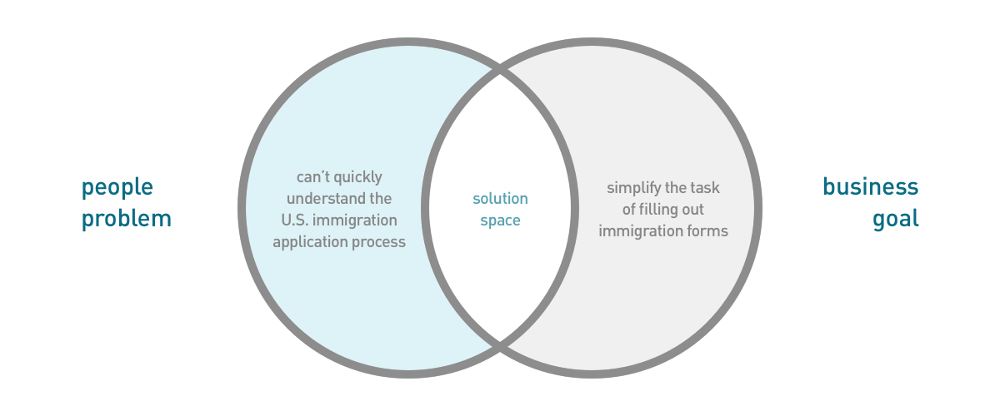
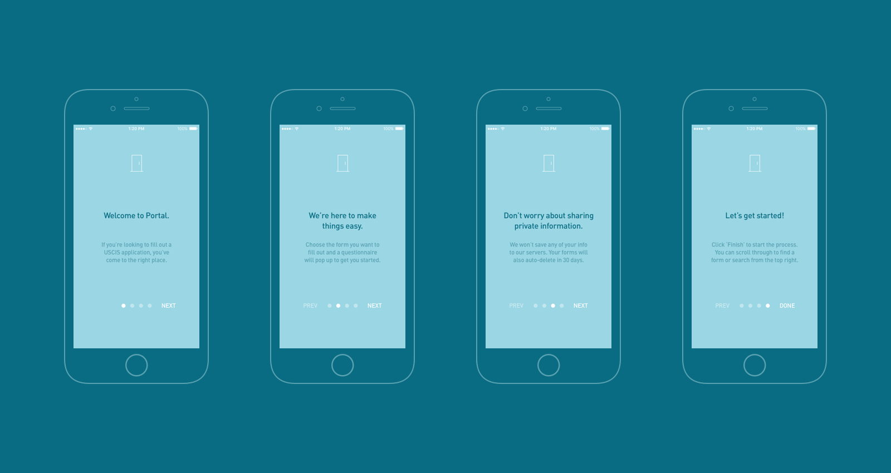
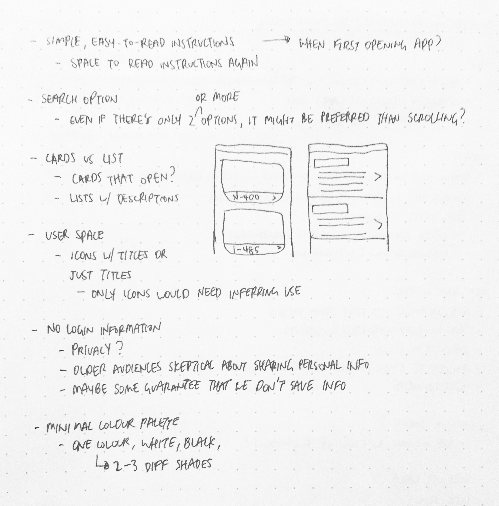

Type of work
Product design
Tools
Sketch
Date
Feb 2017 - Jan 2018
Portal is an immigration application assistant project that started at Treehacks 2017,
an annual hackathon held at Stanford University.
In light of recent U.S. executive orders in early 2017, we wanted to build a product to alleviate the immigration process as USCIS applications
are often confusing and full of legal terminology.
The idea was to create a basic-language questionnaire app that would sort and transmit the collected survey data to output as a
USCIS application form. I worked on pushing out all the pixels and understanding how to solve the problem.

Constrainted to 36 hours of hacking, I needed to make sure the strategy was clearly defined from the start. For this, I followed the first stage of
Jesse James Garrett's Elements of User Experience to formulate the people problem and our business goal that would act as the project's
overarching purpose and frame of reference.
People problem
In the case of Portal, the people problem is how U.S. immigration forms are composed of legal jargon unfamiliar to most people and
difficult to understand or complete without the finances to hire a lawyer. This makes the process tedious when the fundamental human
right of citizenship should be uncomplicated.
Business goal
To solve the people problem, our business goal was to alleviate the complications of the immigration process by providing a streamlined, simplified
area to complete forms. To prove personal security and to save cloud space, the app would not save any inputted data from users.
To appeal to all audiences, I wanted to make sure the voice of our brand reflected our business goal by appearing conversational and easy to read.
Inspired by MailChimp's Content Style Guide, Portal's voice and tone follow the "this but not that" format.
Voice
Portal's voice is welcoming, friendly, approachable. I also employed the use of Active Voice to ensure that the subject is
doing the action, and not that the action is being done by the subject.
Tone
Portal's tone is informal, while staying clear at the same time. This falls in line with our value of staying "professional but not rigid".
As the app is dealing with legal subject matter, staying attentive to wording is vital so as not to include implicit meaning in our tone.

In our intro screens, you can see how the content style guide was used to create a uniform voice and tone. It sets an easing stage for users
to get comfortable with the app, minimizing thoughts of the app feeling "sketchy" and "unhelpful".
Instead, the app suggests users to think, "Portal is here to help".
To fulfill our business goal of streamlining the immigration application process, the functionality of the app had to be
simple to use. I brainstormed some design system ideas to incorporate that would eliminate implicit user flows and cover
potential user questions on how to use the app.
